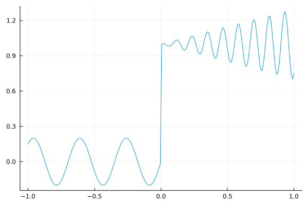
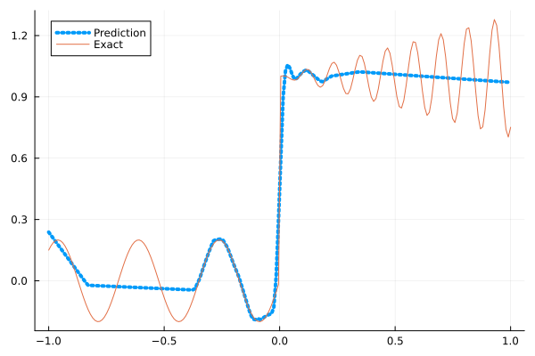
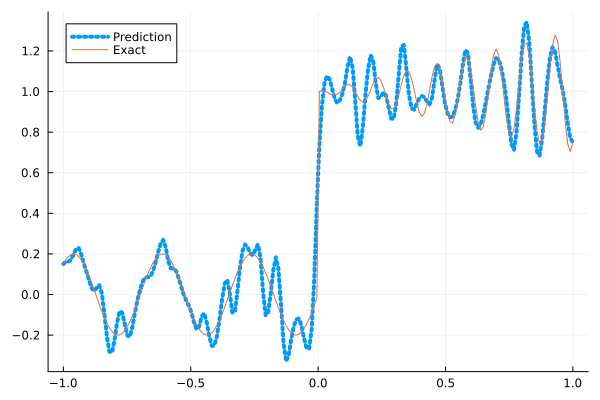
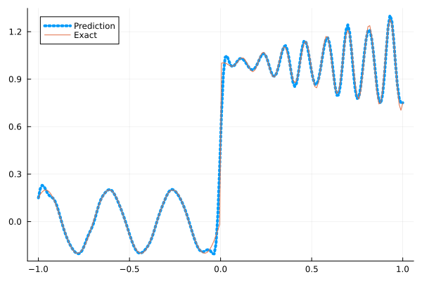
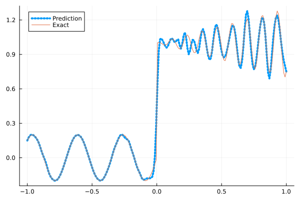
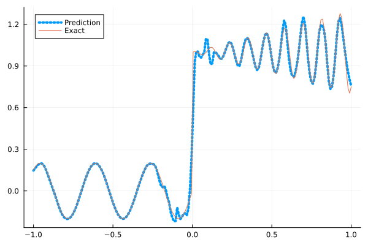

Fitting a nonlinear discontinuous function
This example is taken from here. However, we do not use adaptive activation functions. Instead, we show that using suitable non-parametric activation functions immediately performs better.
Consider the following discontinuous function with discontinuity at $x=0$:
\[u(x)= \begin{cases}0.2 \sin (18 x) & \text { if } x \leq 0 \\ 1+0.3 x \cos (54 x) & \text { otherwise }\end{cases}\]
The domain is $[-1,1]$. The number of training points used is 50.
Import pacakges
using Lux, Sophon
using NNlib, Optimisers, Plots, Random, StatsBase, ZygoteDataset
function u(x)
if x <= 0
return 0.2 * sin(18 * x)
else
return 1 + 0.3 * x * cos(54 * x)
end
end
function generate_data(n=50)
x = reshape(collect(range(-1.0f0, 1.0f0, n)), (1, n))
y = u.(x)
return (x, y)
endgenerate_data (generic function with 2 methods)Let's visualize the data.
x_train, y_train = generate_data(50)
x_test, y_test = generate_data(200)
Plots.plot(vec(x_test), vec(y_test),label=false)
Naive Neural Nets
First we demonstrate show naive fully connected neural nets could be really bad at fitting this function.
model = FullyConnected((1,50,50,50,50,1), relu)Chain(
layer_1 = Dense(1 => 50, relu), # 100 parameters
layer_2 = Dense(50 => 50, relu), # 2_550 parameters
layer_3 = Dense(50 => 50, relu), # 2_550 parameters
layer_4 = Dense(50 => 50, relu), # 2_550 parameters
layer_5 = Dense(50 => 1), # 51 parameters
) # Total: 7_801 parameters,
# plus 0 states, summarysize 80 bytes.Train the model
function train(model, x, y)
ps, st = Lux.setup(Random.default_rng(), model)
opt = Adam()
st_opt = Optimisers.setup(opt,ps)
function loss(model, ps, st, x, y)
y_pred, _ = model(x, ps, st)
mes = mean(abs2, y_pred .- y)
return mes
end
for i in 1:2000
gs = gradient(p->loss(model,p,st,x,y), ps)[1]
st_opt, ps = Optimisers.update(st_opt, ps, gs)
if i % 100 == 1 || i == 2000
println("Epoch $i || ", loss(model,ps,st,x,y))
end
end
return ps, st
endtrain (generic function with 1 method)Plot the result
@time ps, st = train(model, x_train, y_train)
y_pred = model(x_test,ps,st)[1]
Plots.plot(vec(x_test), vec(y_pred),label="Prediction",line = (:dot, 4))
Plots.plot!(vec(x_test), vec(y_test),label="Exact",legend=:topleft)Epoch 1 || 0.15426080406281542
Epoch 101 || 0.015909750998472794
Epoch 201 || 0.01448028364919967
Epoch 301 || 0.013718118147056759
Epoch 401 || 0.013337363516112229
Epoch 501 || 0.013078071869486414
Epoch 601 || 0.013106238276319366
Epoch 701 || 0.012789283798955955
Epoch 801 || 0.012761213751175317
Epoch 901 || 0.012524866376319858
Epoch 1001 || 0.012455611308432899
Epoch 1101 || 0.012417773147044358
Epoch 1201 || 0.012454288636217985
Epoch 1301 || 0.01237011910488294
Epoch 1401 || 0.012304660590368251
Epoch 1501 || 0.012603500831225111
Epoch 1601 || 0.012417338073028618
Epoch 1701 || 0.012465364869314249
Epoch 1801 || 0.012557106758058576
Epoch 1901 || 0.01259126100483091
Epoch 2000 || 0.01246867057403759
10.187407 seconds (13.14 M allocations: 1.482 GiB, 5.69% gc time, 92.47% compilation time)
Siren
We use four hidden layers with 50 neurons in each.
model = Siren(1,50,50,50,50,1; omega = 30f0)Chain(
layer_1 = Dense(1 => 50, sin), # 100 parameters
layer_2 = Dense(50 => 50, sin), # 2_550 parameters
layer_3 = Dense(50 => 50, sin), # 2_550 parameters
layer_4 = Dense(50 => 50, sin), # 2_550 parameters
layer_5 = Dense(50 => 1), # 51 parameters
) # Total: 7_801 parameters,
# plus 0 states, summarysize 88 bytes.@time ps, st = train(model, x_train, y_train)
y_pred = model(x_test,ps,st)[1]
Plots.plot(vec(x_test), vec(y_pred),label="Prediction",line = (:dot, 4))
Plots.plot!(vec(x_test), vec(y_test),label="Exact",legend=:topleft)Epoch 1 || 0.7956711966371287
Epoch 101 || 0.0015099738395747497
Epoch 201 || 9.863710838045325e-5
Epoch 301 || 3.131989410735367e-6
Epoch 401 || 7.29434047286833e-8
Epoch 501 || 9.253915607259619e-10
Epoch 601 || 7.799739757931722e-12
Epoch 701 || 3.86226084049439e-13
Epoch 801 || 1.1227684389491941e-13
Epoch 901 || 2.860418647064605e-14
Epoch 1001 || 4.059004860393456e-14
Epoch 1101 || 3.1827413263114496e-14
Epoch 1201 || 2.3860690930250317e-14
Epoch 1301 || 2.8009202740084702e-14
Epoch 1401 || 2.2690239900257794e-14
Epoch 1501 || 2.4533196970185973e-14
Epoch 1601 || 1.48179642762528e-14
Epoch 1701 || 3.1833895207612547e-14
Epoch 1801 || 3.172069826264108e-14
Epoch 1901 || 3.0417140833210793e-14
Epoch 2000 || 1.570859185214759e-14
5.243072 seconds (8.15 M allocations: 1.298 GiB, 6.45% gc time, 82.50% compilation time)
As we can see the model overfits the data, and the high frequencies cannot be optimized away. We need to tunning the hyperparameter omega
model = Siren(1,50,50,50,50,1; omega = 10f0)Chain(
layer_1 = Dense(1 => 50, sin), # 100 parameters
layer_2 = Dense(50 => 50, sin), # 2_550 parameters
layer_3 = Dense(50 => 50, sin), # 2_550 parameters
layer_4 = Dense(50 => 50, sin), # 2_550 parameters
layer_5 = Dense(50 => 1), # 51 parameters
) # Total: 7_801 parameters,
# plus 0 states, summarysize 88 bytes.@time ps, st = train(model, x_train, y_train)
y_pred = model(x_test,ps,st)[1]
Plots.plot(vec(x_test), vec(y_pred),label="Prediction",line = (:dot, 4))
Plots.plot!(vec(x_test), vec(y_test),label="Exact",legend=:topleft)Epoch 1 || 0.6942690496310826
Epoch 101 || 0.007093755826515724
Epoch 201 || 0.0050050712334641844
Epoch 301 || 0.003589903503134243
Epoch 401 || 0.0023348865173013467
Epoch 501 || 0.001544858080471379
Epoch 601 || 0.0010354000808693233
Epoch 701 || 0.0006479175061868031
Epoch 801 || 0.00037871964091030775
Epoch 901 || 0.0002293888640514223
Epoch 1001 || 0.00015703733866292944
Epoch 1101 || 0.00011743156374541184
Epoch 1201 || 9.072407432336161e-5
Epoch 1301 || 7.0663324859865e-5
Epoch 1401 || 5.514072996168613e-5
Epoch 1501 || 4.3106075081730774e-5
Epoch 1601 || 3.383594125006317e-5
Epoch 1701 || 2.674962507399372e-5
Epoch 1801 || 2.1354372952412096e-5
Epoch 1901 || 1.7244946164385934e-5
Epoch 2000 || 1.4130440541622879e-5
0.759870 seconds (1.15 M allocations: 892.433 MiB, 8.45% gc time)
Gaussian activation function
We can also try using a fully connected net with the gaussian activation function.
model = FullyConnected((1,50,50,50,50,1), gaussian)Chain(
layer_1 = Dense(1 => 50, gaussian), # 100 parameters
layer_2 = Dense(50 => 50, gaussian), # 2_550 parameters
layer_3 = Dense(50 => 50, gaussian), # 2_550 parameters
layer_4 = Dense(50 => 50, gaussian), # 2_550 parameters
layer_5 = Dense(50 => 1), # 51 parameters
) # Total: 7_801 parameters,
# plus 0 states, summarysize 80 bytes.@time ps, st = train(model, x_train, y_train)
y_pred = model(x_test,ps,st)[1]
Plots.plot(vec(x_test), vec(y_pred),label="Prediction",line = (:dot, 4))
Plots.plot!(vec(x_test), vec(y_test),label="Exact",legend=:topleft)Epoch 1 || 0.3309370658104727
Epoch 101 || 0.0053675186131275435
Epoch 201 || 0.004184914995956307
Epoch 301 || 0.002533106857581764
Epoch 401 || 0.001302126953535141
Epoch 501 || 0.00024058474713635223
Epoch 601 || 1.672677609654878e-5
Epoch 701 || 7.424381453432493e-6
Epoch 801 || 6.29568898115169e-8
Epoch 901 || 0.00030939447439627823
Epoch 1001 || 5.375841421689647e-8
Epoch 1101 || 1.6357310134220756e-8
Epoch 1201 || 0.000893292579091669
Epoch 1301 || 4.1610762161846236e-8
Epoch 1401 || 8.83708592815096e-9
Epoch 1501 || 4.211966431000536e-9
Epoch 1601 || 8.148313279382797e-7
Epoch 1701 || 2.3772101522711055e-8
Epoch 1801 || 1.033906459104979e-8
Epoch 1901 || 1.775649565883696e-8
Epoch 2000 || 4.005678050250772e-8
4.993173 seconds (7.29 M allocations: 1.251 GiB, 6.18% gc time, 80.63% compilation time)
Quadratic activation function
quadratic is much cheaper to compute compared to the Gaussain activation function.
model = FullyConnected((1,50,50,50,50,1), quadratic)Chain(
layer_1 = Dense(1 => 50, quadratic), # 100 parameters
layer_2 = Dense(50 => 50, quadratic), # 2_550 parameters
layer_3 = Dense(50 => 50, quadratic), # 2_550 parameters
layer_4 = Dense(50 => 50, quadratic), # 2_550 parameters
layer_5 = Dense(50 => 1), # 51 parameters
) # Total: 7_801 parameters,
# plus 0 states, summarysize 80 bytes.@time ps, st = train(model, x_train, y_train)
y_pred = model(x_test,ps,st)[1]
Plots.plot(vec(x_test), vec(y_pred),label="Prediction",line = (:dot, 4))
Plots.plot!(vec(x_test), vec(y_test),label="Exact",legend=:topleft)Epoch 1 || 0.32685387624647616
Epoch 101 || 0.006323937609596898
Epoch 201 || 0.005710258416930655
Epoch 301 || 0.005199339632806183
Epoch 401 || 0.004699115124791341
Epoch 501 || 0.0040232746922183385
Epoch 601 || 0.002656230271987854
Epoch 701 || 0.0007862587309244828
Epoch 801 || 0.00010598470330278077
Epoch 901 || 1.1534371586273404e-5
Epoch 1001 || 5.651898495013965e-6
Epoch 1101 || 4.033120347578188e-6
Epoch 1201 || 9.961690563238707e-5
Epoch 1301 || 1.555124510944658e-6
Epoch 1401 || 4.8003904695851506e-6
Epoch 1501 || 3.062118387220724e-6
Epoch 1601 || 1.5663091031976488e-6
Epoch 1701 || 9.473954161439697e-9
Epoch 1801 || 1.5546356074655693e-6
Epoch 1901 || 2.564507311494248e-7
Epoch 2000 || 7.656833076901079e-6
4.386466 seconds (7.04 M allocations: 1.235 GiB, 7.29% gc time, 86.95% compilation time)
Conclusion
"Neural networks suppresse high frequency components" is a misinterpretation of the spectral bias. The accurate way of putting it is that the lower frequencies in the error are optimized first in the optimization process. This can be seen in Siren's example of overfitting data, where you do not have implicit regularization. The high frequency in the network will never go away because it has fitted the data perfectly.
Mainstream attributes the phenomenon that neural networks "suppress" high frequencies to gradient descent. This is not the whole picture. Initialization also plays an important role. Siren mitigats this problem by initializing larger weights in the first layer, while activation functions such as gassian have large enough gradients and sufficiently large support of the second derivative with proper hyperparameters. Please refer to Vincent Sitzmann, Julien Martel, Alexander Bergman, David Lindell, Gordon Wetzstein (2020), Sameera Ramasinghe, Simon Lucey (2021) and Sameera Ramasinghe, Lachlan MacDonald, Simon Lucey (2022) if you want to dive deeper into this.